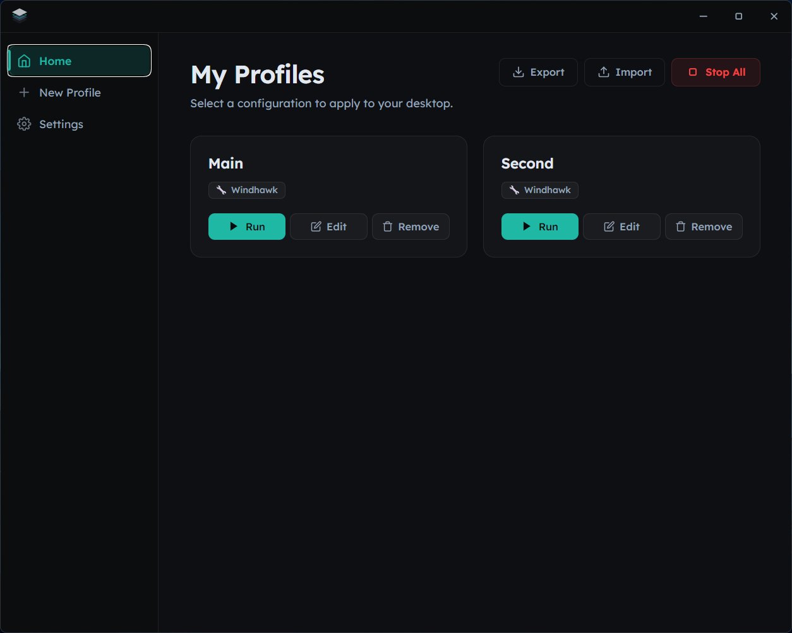

Profile-based desktop environment manager for Windows
Bundle configurations for Rainmeter, YASB, GlazeWM, Zebar, Wallpaper, and Windhawk into profiles. Apply any profile with one click.

Kalam manages every aspect of your desktop setup through a single interface.
Layout selection and activation. Pick from your installed Rainmeter layouts and apply them instantly.
Config YAML + styles CSS injection. Full control over your taskbar appearance and behavior.
Window manager config. Swap between tiling layouts and workspace setups seamlessly.
Status bar settings. Customize system monitors, clock, and quick-access widgets.
Desktop background across virtual desktops. Set unique wallpapers that persist per profile.
Mod enable/disable + per-mod settings. Fine-tune Windows shell mods without manual registry edits.
Three simple steps to a fully customized desktop.
Give your profile a name and select which tools to include. Each profile is a complete desktop blueprint.
Set up each tool exactly how you want it — Rainmeter layouts, YASB styles, GlazeWM workspaces, and more.
Click Run on any profile to switch your entire desktop environment. Everything changes at once.